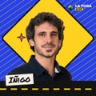
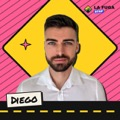
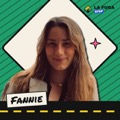

LA FUGASTOP
Sal en autostop. Vuelve con una historia.
Una aventura de dos en dos: sales en autostop desde una ciudad y llegas a un pueblo que no conoces hasta el último momento. Allí te espera una fiesta con la gente del pueblo. No hay clasificación ni cronómetro: lo que cuenta es el camino y lo que dejas al llegar.
La idea es unir la ciudad y el pueblo, y que cada edición siembre algo en un pueblo que lo necesita.
- 2027Julio, primera edición
- 5Ciudades de salida
- 500Plazas
- 1Pueblo secreto



Con Mara, Diego y Fannie.